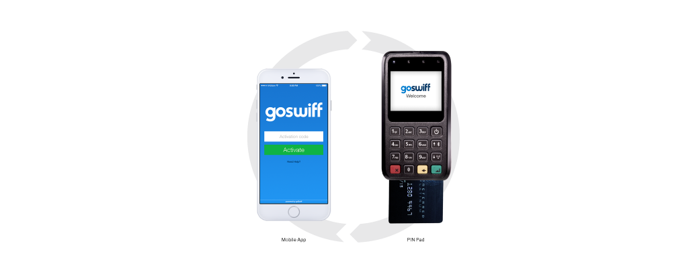

Merchant Portal
Overview
GoSwiff provides a white-label mobile payment application, enabling merchants of all sizes to accept digital payments – mobile and in-store.
The mobile application together with mobile point of sale (mPOS) card reader allowed for fast, ‘easy’ and secure card transactions anywhere, anytime. The technology enables mobile devices combined with card readers to create an affordable and easy to integrate mobile payment solution.